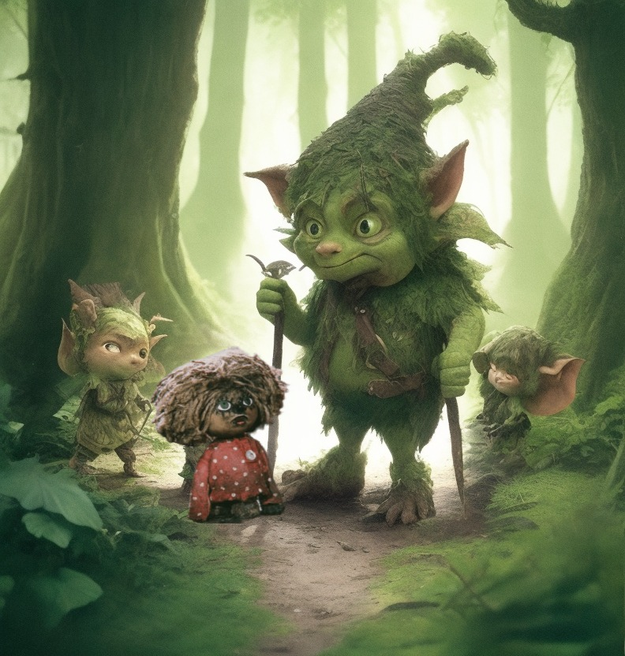
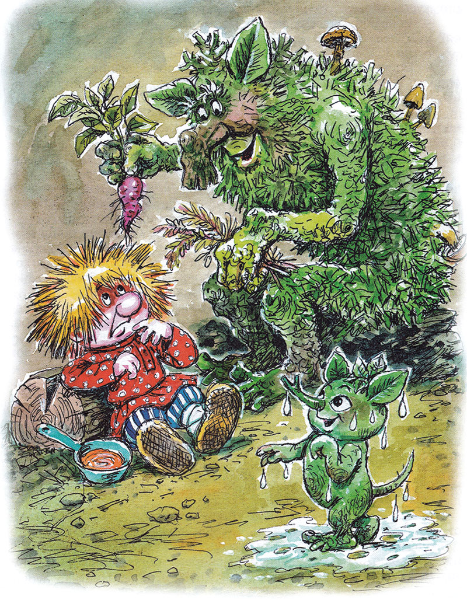
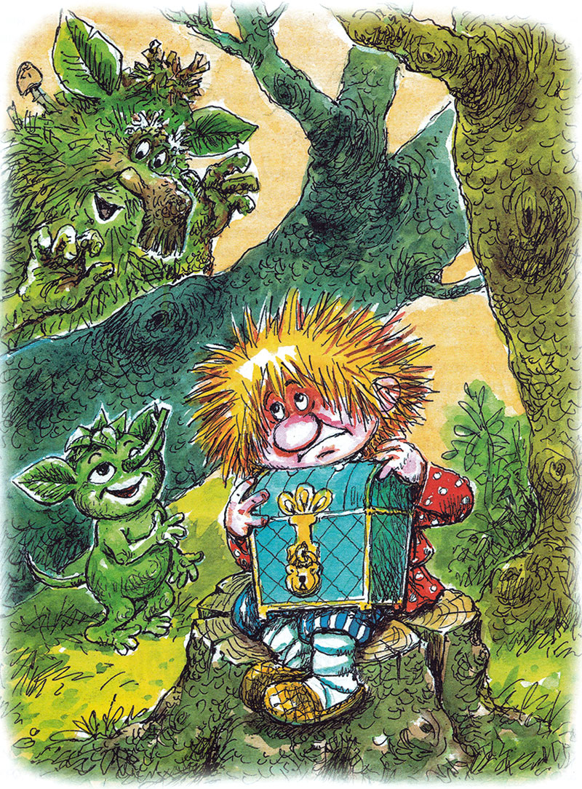
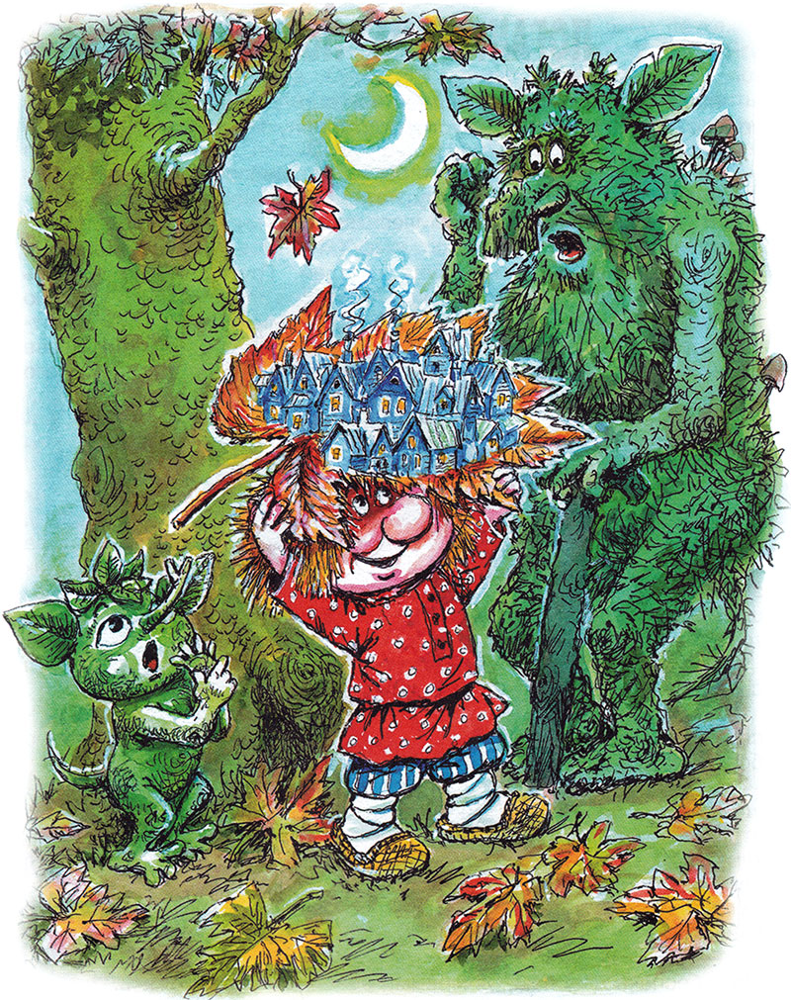

Домовёнок Кузя - продолжение -6.

14. Гости
Маленький домовенок простудился и заболел. Пристали к нему лихорадка с лихоманкой, трясовица с огневицей. Дрожит Кузька от холода, а сам горячий, как горшок в печи. Говорит, будто комар пищит. Кашляет, будто медведь рыкает.
— Знаю на такую болезнь управу, — сказал дед Диадох. — Да пойдет ли домовым на пользу? — и принес из дальнего угла пещеры (лешие называли ее берлогой) горькую кору, сухие корешки, кислую травку. Кузька в рот бы их не взял, но с медом и не такое съешь.

Из лесу прибегал Лешик, мокренький, как банный веник:
— Ну и дождь! Ну и буря! Ну, как ты тут? Ну, я пошел!
Дед Диадох приходил задумчивый, суровый. Рассказывал, как семь ветров дерутся, реки в берега бьются, гром гремит, лес гудит. Клал Кузьке на лоб лапу-деревяшку, совал ему в рот кусок коры:
— Вспомни, внучек, как домовые от таких напастей лечатся?
— Домой хочу! — пищал Кузька.
— Поправься сначала, — говорил старый леший. — И куда спешить? Может, сгорел твой дом? Каково тяжело на пепелище, сам знаю.
Во сне Кузька увидел Вуколочку: грустный и молчит. А вдруг и вправду все сгорело? Или по Кузьке скучает? «Завтра приду», — утешил его Кузька, проснулся и вспомнил, как домовые управляются с болезнями:
— Ой вы, лихорадушка с лихоманушкой, трясовичка с огневичкой! Приходите ко мне в гости. — Домовенок помолчал и добавил: — Вчера! Да не забудьте! Вчера приходите, пожалуйста!
Кузьке сразу стало легче. Лежит себе в коробе, поправляется. Пусть болезни гадают, как это им прийти не завтра, не сегодня, а вчера. Уснет домовенок, а какая-нибудь смелая козявка сядет ему на нос или на брови, навестит больного. И, проснувшись, Кузька встретит се пристальный взгляд.
Но вот проснулся, а вместо козявки на него глядит Медведь. Кузька забился под сухие листья, на самое дно короба. Медведь листья раскопал, Кузьку вынул и вручил ему гостинцы: калину да рябину. Съели ягоды с медом, и домовенок спросил, не покажет ли ему Медведь дорогу домой.
— А это чем не дом? — оглядел Медведь лешачью берлогу.
— Дом — это когда есть печка! — объяснил Кузька.
Уточнив, что такое печка, Медведь сказал, что от нее дому только вред и опасность. Кому холодно, пусть обрастает шерстью. Кузька вспомнил про. пожар, помрачнел. Но тут вошла Лиса:
— Что значит, когда медведь через пень скачет? — дразнила она. — Значит, либо пенек невысок, либо медведь сердит.
Кузька засмеялся, спросил Лису про свой дом. Лиса вместо ответа стала выпытывать: живут ли куры в избе вместе с людьми или где-нибудь отдельно? На Кузькины слова, что в избе хорошо, там горячая каша, пареная репа, топленое молоко, Лиса усмехнулась:
— А у нас, что ли, все холодное? Не вся еда растет, некоторая бегает! Неправ медведь, что корову задрал. Неправа и корова, что в лес зашла. Хи-хи-хи!
Медведь так и покатился по полу со смеху. А Кузька решил больше не говорить им про свою деревеньку: жалко кур и скотину.
— Говоришь, дома тебя ждут, — обрадовался дед Диадох, влезая в берлогу. — А теперь и в лесу друзья завелись.
Когда все ушли, Кузька улегся поудобнее. Разговаривает сам с собой то голосом Афоньки или Адоньки, то басом, как Сюр, то пищит, как Вуколочка, Сам не заметил, как пошел в пляс с друзьями-домовятами. В середину хоровода опустился горшок с горячей кашей. И Кузька проснулся. «Кыш отсюда!» — сказал он нахальным козявкам, они лезли ему прямо в глаза. Но это был солнечный луч. И в нем лихо отплясывала лесная мелюзга, у которой оказались не только лапки и усики, но и крылья.
Кузька весело вылез наружу и чуть было снова не заболел — от страха. Дед Диадох с Лешиком волокли к берлоге корзину, а в ней копошились ящерицы с оторванными хвостами, больные жуки, еще кто-то…
— Кузя поправился! — обрадовался Лешик. — Теперь помогай других лечить!
— Ой, напасти незнакомые, звериные и насекомые! — дрожащим голосом позвал домовенок. — Приходите вчера!
— Вчера они и пришли, — сказал дед Диадох. — Буря напоследок совсем разгулялась! Что ж, полечим по-своему, по-лесному. А семь ветров помирились, улетели каждый в свою сторону. Просил их узнать про твою деревеньку. Какой-нибудь из них принесет весточку с твоей родимой стороны. Будем ждать.
15. Бездомный домовой
Маленький домовенок ждать не умел. Сундучок в руки — и к Могучему дубу. Если уж ноги сами принесли его в лес, то пусть сами и уносят отсюда.

Долго ли бежал, коротко ли, вдруг слышит: собаки лают. Значит, деревня рядом. Кузька, откуда силы взялись, продирается сквозь кусты. Выскочил на поляну, а там дед Диадох с Лешиком деревца пересаживают и поют. Песни у леших без слов, похожи на собачий лай с подвыванием.
— Молодо-зелено! — показал дед Кузьке на тонкие рябинки. — Теснятся, глупые, подрастут — и ветку вытянуть некуда.
Утром Кузька с сундучком — опять из лесу. Но уже не туда, куда ноги несут, а куда глаза глядят. Бежал, бежал, слышит стук топора. «Ну, — думает, — пристроюсь под телегой, люди и не заметят, кого с дровами везут».
А это не топор стучит. Дед с Лешиком сухостой валят.
— Сами не свалим, — объяснил Лешик, — от ветра упадет на кого и придавит.
— Дело не медведь, само в берлогу не уляжется. — Старый леший тюкал ладонью, как топором, по чахлым деревцам. — Вот мы и управляемся, старый да малый. И не в лад, да ладно. И не хитро, да кстати.
На другой день подул ветер, верхушки деревьев кланялись ему вдогонку. «С родной стороны!» — обрадовался Кузька, побежал против ветра. Бежит, бежит, слышит щелканье кнута. Скорей к пастуху со стадом! А это дед Диадох стучит в ладоши. А над ним по веткам мчится стадо, да только беличье, перегоняют его лесовики из ельника в орешник.
— Кузя! — кричит Лешик. — Ветер прилетал, весточки не принес. Нету вон в той стороне твоей деревеньки!
Несколько дней собирал Кузька с белками орехи, лучшие клал в кузовок — гостинец из леса для друзей-домовят. А потом с сундуком да с гостинцем бежал, бежал, а кругом один лес — тоска зеленая. Со злости начал грибы сшибать лаптями. Вдруг слышит:
— Пошел, нашел, потерял! Потерял, нашел, пошел!
Люди ходят, грибы ищут! Надо пойти за ними потихоньку, да еще в корзины грибов подложить незаметно. Глядь, а это и не люди вовсе. Дед Диадох и Лешик собирают под елками какие-то красные ягоды. Съел одну — невкусно.
— Семена ландышей, — сказал старый леший. — Птицы отнесут их в Обгорелый лес. Печален лес без ландышей… Пошел, нашел, потерял!
— Потерял, пошел, нашел! — отозвался Лешик. — Поговорка у нас такая. Повторяй за мной, Кузя!
— Пошел, нашел, потерял! — нехотя подтянул Кузька.
— Потерял, пошел, нашел! — И дед Диадох вручил домовенку сверкающий сундучок — сокровище домовых.
Как это Кузька потерял его в лесу? Лучше самому пропасть, чем вернуться домой без сундучка! Никуда он больше не бегал. Сидит на пне, ждет, не побегут ли от ветра верхи деревьев. Пять ветров прилетали, никаких вестей с родной сторонки, все стороны чужие. И все кругом домовенка — чужое. Цветы не те: горошек мышиный, лен кукушкин, капуста заячья, все не на грядке, а в беспорядке. Сколько ни дергай, ни тебе красной морковки, ни желтой репки. Даже лопухов нет. И птицы не те: никто не кукарекнет, не закудахчет. Гуси и утки только в небе гогочут, пролетая стаями. Чего они в небе не видали? Чириканья много, а воробья ни одного. Мыши и те другие: про кошек слыхом не слыхали, домовых не дразнят Лиса с медведем куда-то пропали, поговорить не с кем.
— Дед, а дед, — говорил Лешик, — этак Кузя у нас зачахнет, на корню высохнет. Давай сведем его домой!
— Беда! — тихо, как сухие листья шуршат, отвечал дед. — Всяк кулик на своем болоте велик. Давно б вывели его из леса, да ведь не знаем, цела его деревенька или нет. Каково ему будет одному на пепелище в чистом поле, да еще зимой? Будем ждать, не тот ветер, так другой принесет весточку.
Чего-чего, а ждать лешие умеют. Дождись-ка, пока из желудя еще один Могучий дуб вырастет. А лешим хоть бы что, ждут себе, поджидают.
— Не умею я ждать, — горевал Кузька. — Мы, домовые, только праздники умеем ждать, тут уж ничего не поделаешь.
— Вот и хорошо, — сказал дед Диадох. — У нас в лесу скоро праздник. Гостем будешь. А зимой такие гости придут, что и хозяевам воли не дадут: мороз-трескун да вьюга-метелица. Ну да темна ночь не навек…
16. Осенний праздник
Маленький домовенок дождался лесного праздника. Ну-ка посмотрим, как пляшут в лесу, что поют, чем угощаются!
— Кто с нами, кто с нами петь и плясать? Кто с нами, кто с нами в игры играть? — завопил домовенок, выскочив из берлоги.
Дед Диадох остановил его: осенний праздник начинается тихо, любуйся красотой, да так, чтоб ни один золотой или красный листик не упал с ветки.
Такого синего неба и летом не увидишь День радовался солнцу, солнце— всякому зверю и птице. Береза Кургузенькая сияла такой красотой, что все деревья кругом восхищенно шелестели. Осина Трясушка в красной одежде была так хороша, что с ее красотой могло поспорить лишь ее отражение в большой луже.
Всяк хотел оставить о себе добрую память на долгую зиму.
Тихо вышли на поляну к Красной сосне лесные звери. Кузька оглянулся, а рядом — лось. И не слышно, как подошел. То ли дело корова или лошадь! То-то было бы треску, мычания, ржания. А вот из кустов вышли тихие, серые, как туман, глаза горят, собаки не собаки, сели на поляне, подняли морды.
— Не бойся! — сказал Лешик. — Сегодня они никого не тронут.
— Волков бояться — в лес не ходить! — произнес Кузька.
— Вот как у вас сказывают! — рассмеялся дед Диадох.
Как же испугался домовенок, когда узнал, что это и вправду волки. Хорошо, что старый леший увел его на другой конец поляны зайцев считать. А Медведя и Лисы что-то не было.
Красивый праздник, да больно тихий. И угощать никого не угощают.
— А потому и праздник, что нет угощения, — сказал дед Диадох. — А то волки зайцами угостятся, куницы — белками, и вместо праздника выйдет одно горе.
Звери подходили, рассаживались на поляне, чего-то ждали. И тут на середину круга вышли дед с внуком. Лешик свистнул, дед хлопнул в ладоши, аукаются, ухают, хохочут. Потом запели без слов — залаяли с подвыванием, а звери им подтягивали. Вдруг старый леший пропал, вместо него среди поляны появился корявый пень, а вместо Лешика — зеленый кустик. Пень превратился в старого серого волка, кустик — в веселого волчонка. Подбежал волчонок к Кузьке, хвать за рубаху. Кузька обмер, а волчонок завизжал и превратился в Лешика. Старый седой волк снова сделался добрым дедом Диадохом. Вот это был праздник!
Вдруг верхушки деревьев зашумели, побежали. Листья заплясали в воздухе. Летят, как изукрашенные грамоты неведомо от кого неведомо кому. Вот зеленый лист с пурпурным узором, вот пурпурный с золотым. Который краше? Оба хороши! Вот на листе жар-птица с жар-птенчиком, вот богатырский конь с огненной гривой.
«И кто так прекрасно разрисовал осенние листья? — думал Кузька. — Летят и летят… А может, который из них видел маленькую деревеньку над небольшой речкой?»
Тут большущий кленовый лист опустился прямо в руки к деду Диадоху. Дед повертел его, ничего не понял. Зато Кузька сразу разглядел на листе свою деревеньку. Каждая избушка не крупнее божьей коровки, дерево ниже травинки, речка тоньше былинки.

— Глядите-поглядите! — кричал домовенок. — Даже трубы на крышах нарисованы. Дым бежит в гости к тучам и облакам. Цела моя деревенька!
Пока разглядывали лист, ахали, радовались, в лесу стало темно, показалась луна — медвежье солнышко. Вдруг листья полетели, будто их метлой метут. Словно летит кто-то, метлою машет, гудит: «Унесу-у-у!» Звери в испуге разбежались. Осенний праздник кончился.
— Теперь знаем, куда идти, — сказал домовенок. — Выспимся, и проводите меня из лесу.
— И верно, — зевнул старый леший. — Утро вечера мудренее, трава соломы зеленее.
Никогда не видел Кузька, чтобы лешие спать ложились. В лесу ночью еще больше жизни, чем днем: звери рыскают, совы кружатся, ночные цветы цветут, светляки и гнилушки светят, много у леших забот. А сейчас домовенок из своего короба слышал, как не спеша укладываются лешие, старый да малый, как желают ему и друг другу приятных снов.
— Нам с вами зима, — зевнул дед Диадох, — одна ночь. Закроешь глаза, наглядишься снов, откроешь — и весна!
Бедный домовенок спросонья не понял, что значат эти слова.
Продолжение следует